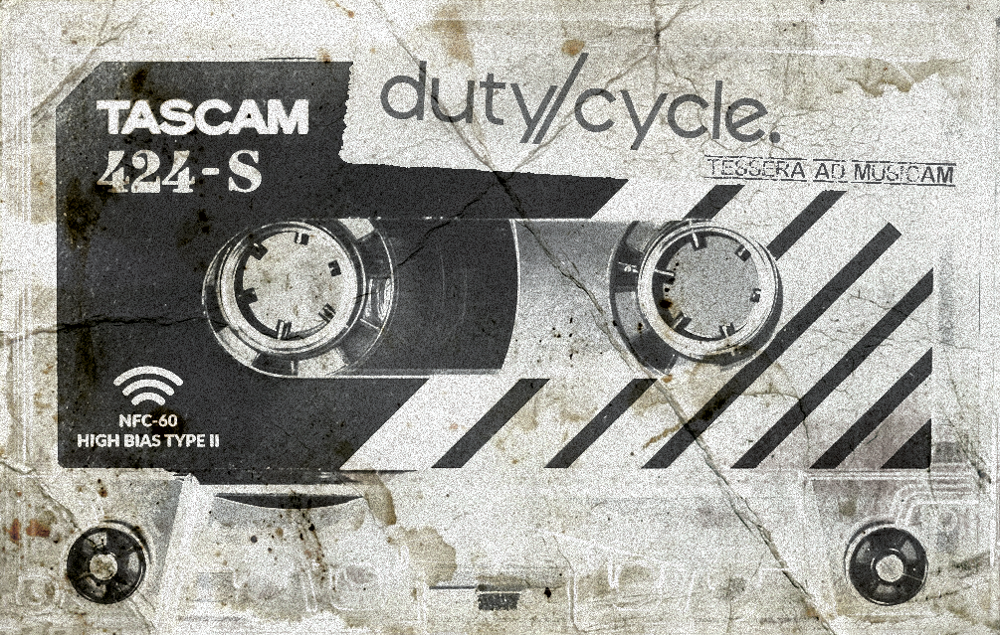

If you are reading this, you are one of the few who possess the exclusive, hand-delivered Duty Cycle Cassette-Tape-Card. You are holding the physical key - and now, you have unlocked the sonic reality.
What you are hearing right now is my latest, unreleased work - a track that exists nowhere else. It remains hidden from the world until the 1st of May, 2030.

This is your private broadcast, brought to you ahead of time, and ahead of everyone else. Treat this card as your personal portal; keep it close and check back periodically. The frequency will change, and new exclusive sounds will manifest here when you least expect them.
Enjoy the journey. Thank you for being part of the inner circle.
Hailing from Silesia, Poland, Duty Cycle (Max L. Patyk, b. 1982) is a composer and producer pioneering an eclectic fusion of tracker techniques, analog synthesis, and electric guitar. Through his independent label Sonistep Recordings, he explores the boundaries of contemporary electronic music...
The artist's roots trace back to the mid-90s, when he began exploring the capabilities of Amiga and PC computers as a self-taught guitarist. It was his early encounter with the tracker culture that defined his unique approach to sound programming. For over two decades, the creator operated under numerous aliases, adapting his artistic identity to the specific genres he explored - ranging from techno to ambient.
In 2024, the consolidation of his work was announced under the moniker Duty Cycle. The project represents a synthesis of downtempo, IDM, deep house, and instrumental ambient. The sound of Duty Cycle is built upon the use of electric guitar, analog synthesizers, and advanced hardware sequencing. A vital element of his compositions involves original field recordings—whispers, static, and environmental textures that grant his raw electronics an organic, "breathing" quality.
Duty Cycle’s work is deeply rooted in the aesthetics of cyberpunk literature (William Gibson, George Orwell) and iconic film scores (Vangelis, Angelo Badalamenti), lending his music an oneiric, often melancholic dimension. The artist avoids rigid genre boundaries, focusing instead on texture and sonic space.
Duty Cycle is present on major streaming platforms, industry-specific services (including JunoDownload and SoundCloud), and social media. The creator actively promotes unconventional distribution methods, utilizing NFC technology to provide fans with unique musical content on physical media. His performances often take the form of mobile busking, where he utilizes modern software and controllers to create tracks on-the-fly in interaction with a spontaneous audience.
“The soul sings, the fingers play, the machine processes.” This is music for those who seek the warmth of human memories and authentic emotions within cold, digital code.